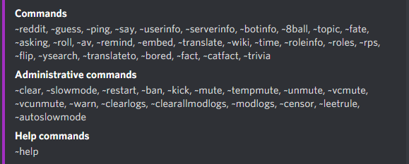
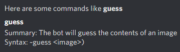
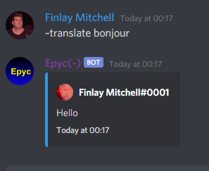
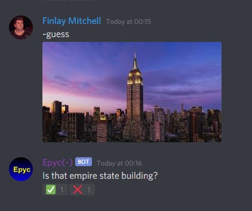
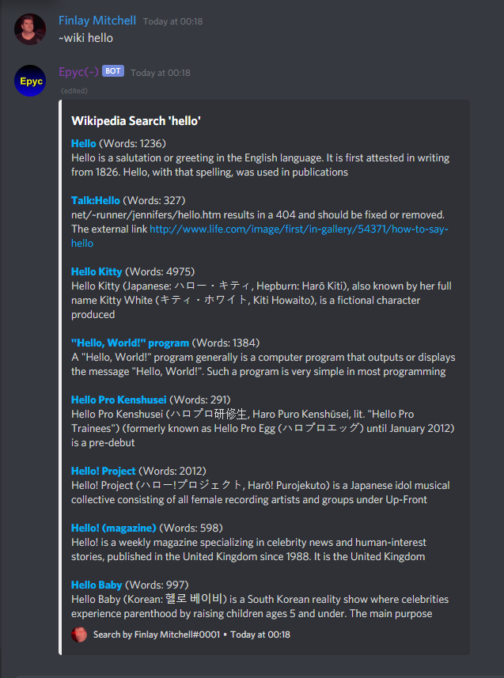

<!DOCTYPE html>
<html lang = "en">
    <head>
        <meta charset = "UTF-8">
        <meta name="viewport" content="width=device-width, initial-scale=1.0">
        <title> Finlay Mitchell</title>
        <link rel = "stylesheet" href = "style.css">
        <link rel="stylesheet" href="https://cdn.jsdelivr.net/npm/bootstrap@4.5.3/dist/css/bootstrap.min.css" integrity="sha384-TX8t27EcRE3e/ihU7zmQxVncDAy5uIKz4rEkgIXeMed4M0jlfIDPvg6uqKI2xXr2" crossorigin="anonymous">
      
        <script src="https://code.jquery.com/jquery-3.5.1.slim.min.js" integrity="sha384-DfXdz2htPH0lsSSs5nCTpuj/zy4C+OGpamoFVy38MVBnE+IbbVYUew+OrCXaRkfj" crossorigin="anonymous"></script>
        <script src="https://cdn.jsdelivr.net/npm/popper.js@1.16.1/dist/umd/popper.min.js" integrity="sha384-9/reFTGAW83EW2RDu2S0VKaIzap3H66lZH81PoYlFhbGU+6BZp6G7niu735Sk7lN" crossorigin="anonymous"></script>
        <script src="https://cdn.jsdelivr.net/npm/bootstrap@4.5.3/dist/js/bootstrap.min.js" integrity="sha384-w1Q4orYjBQndcko6MimVbzY0tgp4pWB4lZ7lr30WKz0vr/aWKhXdBNmNb5D92v7s" crossorigin="anonymous"></script>

        <link rel = "stylesheet" href = "https://stackpath.bootstrapcdn.com/font-awesome/4.7.0/css/font-awesome.min.css">

        <link rel="shortcut icon" type="image/x-icon" href="images/code.png">
        <script src=""

    </head>

    <body>
        <nav class="navbar navbar-expand-lg navbar-light">
            <a class="navbar-brand" href="#">Finlay Mitchell<!----></a>
            <button class="navbar-toggler" type="button" data-toggle="collapse" data-target="#navbarSupportedContent" aria-controls="navbarSupportedContent" aria-expanded="false" aria-label="Toggle navigation">
              <span class="navbar-toggler-icon"></span>
            </button>
          
            <div class="collapse navbar-collapse" id="navbarSupportedContent">
              <ul class="navbar-nav ml-auto">

             <!--   <li class="nav-item">
                  <a class="nav-link" href="#">Services</a>
                </li> -->
                <div class="collapse navbar-collapse" id="navbarSupportedContent">
                  <ul class="navbar-nav ml-auto">
                    <li class="nav-item">
                      <a class="nav-link" href = "http://finlaymitchell.ml/">Home</a>
                    </li>
                    <!-- <li class="nav-item">
                      <a class="nav-link" href="#">About</a>
                    </li>
                    <li class="nav-item">
                      <a class="nav-link" href="#">Services</a>
                    </li> -->
                    <li class="nav-item">
                        <a class="nav-link" href="http://finlaymitchell.ml/contact.html">Contact</a>
                      </li>
                      <li class = "nav-item">
                          <a class = "nav-link" href = "http://finlaymitchell.ml/links.html">Links</a>
                      </li>
                      <li class = "nav-item">
                        <a class = "nav-link" href = "http://finlaymitchell.ml/donate.html">Donate</a>
                    </li>
              </ul>
            </div>
        </nav>


<div class = "main">
  <h1> Finlay Mitchell</h1>
  <h4>Software developer</h4>
  <!-- <p>Hi, I'm Finlay and I'm a 15 year old software developer from England. <br> I specialise in Discord bot development, robotics, web development and more.</p> -->
  <p>I am a developer from England who has a passion for software development and computing skills. <br> I have been working on developing my skills in many areas of computing,
  whether it be software development, networking and learning how different systems work & operate.<br><br><h3>Software development</h1>
  I have a strong passion for making new applications ranging from websites to Discord administrative bots. I have worked on many different 
  projects in many different languages. I have worked on Windows graphical applications and Discord bots within C#, powerful applications varying from console 
applications to basic cames with the unreal engine. I also have got basics in other languages, for example. HTML, CSS + JS to make websites, like this, visual basic for some simple
scripts, Arduino for robotics and python for a range of projects and uses. </p>

<h4>Discord bots</h4>
<p>Discord is a large and growing chat platform which enables you to join and/or make up to 100 of your own chatrooms, called servers where you can make your own custom rules, channeles, roles and most importantly, bots.
  I have worked on many Discord bots in the past year, and have even built my own open source ones with it, for example <a href = "https://www.github.com/Ahhmonkeydevs/LexiBot" target=" = "_blank">LexiBot</a>
which is my server specific bot. and <a href = "https://www.github.com/Finlay-Mitchell/CamBot" target = "_blank">CamBot</a>, my open source bot template anyone can implement into their own servers.<br>These 
bots are asynchronous and interfaces with the Discord rest API that can sometimes handle up to 30 requests per second. I do many things with these bots and even use regular expressions to sanitise input to the commands
as well as internal checks that cannot be injected. I use the <a href = "https://github.com/discord-net/Discord.Net/" target = "_blank">Discord.net</a> wrapper to interact with said API. My bots are used in over 50 servers 
and are used by thousands of people, daily. I provide administrative commands such as ban, kick, warn(which are all logged to a database which with a command, can show all users infactions in a paginated list, and 
allows you to modify these by removing all of them or ones at a certain index) and even control the cooldown interval, being how often users can send messages. I am able to analyse all user messages and filter them via
chat filters which use regular expressions and advanced rules, from files that with commands you can update and write to as much as you want, to determine whether users are mentioning censored words, sending links and even mass 
mentioning users/roles without sufficient permissions to do so. I am able to analyse users messages and interpret its data to gather data and manipulate it for my own usage. I also read from external API's and gather data into a JSON 
format that I can also use for my commands. This is all hosted via a custom AWS EC2 instance.</p>

<div class = "imgs">
<p>Here is a list of all commands:</p>

<p>And you can also get the syntax and summary of each command!</p>

</div>
<!-- <div class = "imgs">
  <p>Some of my work:</p>
  
   
  
</div> -->

<div class = "main">
  <!-- <p>As you can see only from the three images above, my bots offer unique, user friendly and entertaining for the members of your server.</p> -->
</div>

        <footer>
          <hr>
          <p>2020 Copyright&copy;. All Rights Reserved</p>
      </footer>
  
    </body>
</html>